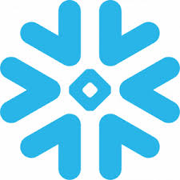
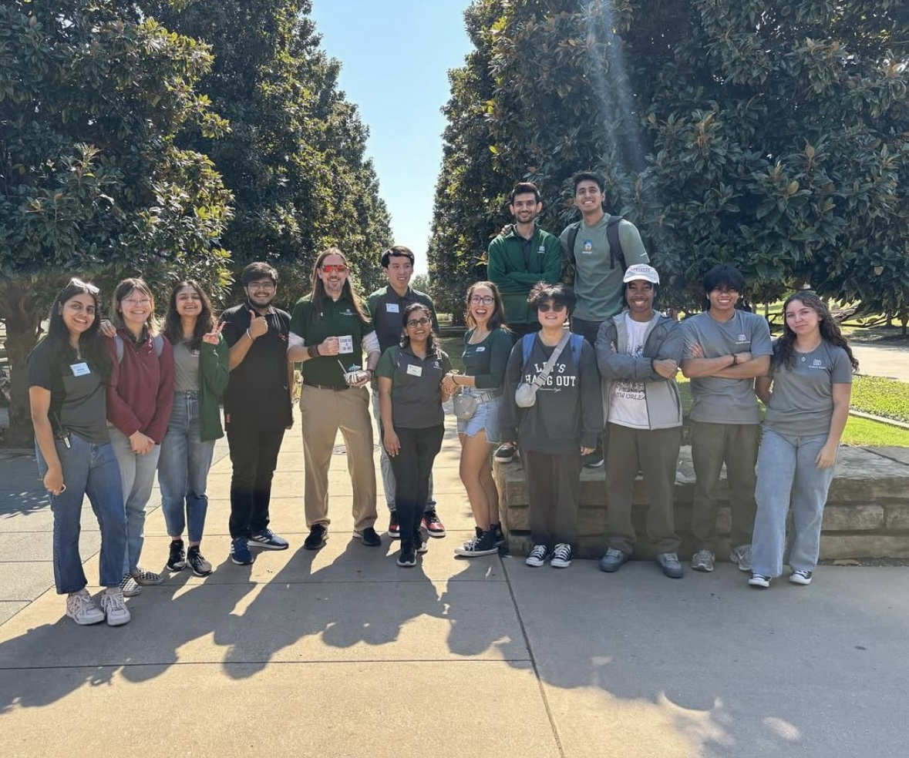
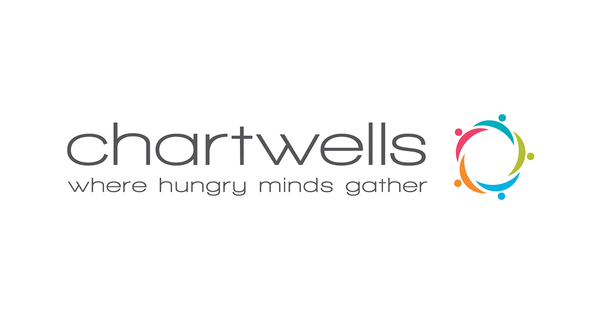
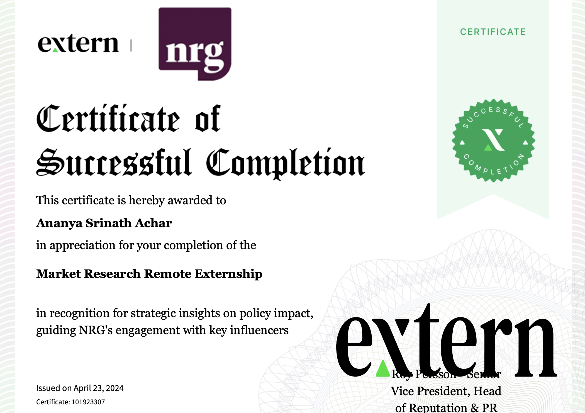

Did you know? I love laundry days. That is my passion for cleaning. Cleaning everything down to a T. It’s the same satisfaction I get when I clean messy data.
My entire profile talks about my love for technology, and while that’s a big part of who I am, I want you to know I’m more than that. My zest for life spills into so many other areas: nutrition, writing, psychology, music, and everything in between. I’m endlessly curious, and I believe that exploring different passions only makes me better at what I do.

Data Engineer Intern
Supported an education client’s shift to modular school performance reporting, working alongside BI and product teams to streamline data across districts.
Business Intelligence Engineer
Worked with a UK energy provider to uncover churn patterns and improve reporting pipelines, blending analytics with business context in a fast-paced delivery setup.
Data Analyst Intern
Helped a hardware and IoT team analyze device diagnostics to understand early failures and inform product pricing decisions.






UT Dallas | Leadership

Impact | Growth

Customer Service | Student Engagement

Community | Volunteering

Google | Advocacy

Marketing | Analysis

“Ananya has been a great leader and role model for her peers at the Student Union.”
“She elevated the spirit and demeanor of the team since joining.”
Supervisor at UT Dallas Student Union

“Ananya has grown as a person and as a team leader and has made us proud in her accomplishments as a professional.”
“Her communication skills and work ethic always supported our efforts here at UTD.”
Supervisor at UT Dallas Student Union

“Ananya was promoted to Student Manager due to her impressive skills and leadership as a Student Employee.”
“She serves on the Student Leadership Council and takes the initiative to get things done.”
Supervisor at UTD Student Union

“Ananya takes an active interest in learning and gaining knowledge in American Business Practices.”
“Her experience with Python, Microsoft Power BI, C++, My SQL, C, HTML, CSS, JavaScript, and Informatica would make her an asset to any organization.”
President & CEO, Corporate Connections - Ananya's Professor

“I was particularly impressed with her communication skills and ability to deal with challenging situations.”
“She will be an excellent asset to the team.”
Partha directly managed Ananya at Cognizant

“Her clear vision and strategic thinking have been an asset to all the projects she has been a part of.”
“I highly recommend Ananya as a leader and believe her contributions would be invaluable to any organization.”
Shreya managed Ananya at U&I Trust

“Full of ideas and her clarity towards problem solving is exemplary.”
“One won't find many like Ananya out there.”
Mukul and Ananya worked in the same team in U&I trust

“She is highly adaptable, supportive and encouraging and would be a great asset to any team.”
“It was really great to be working under her leadership.”
Venkat Nikhil reported directly to Ananya at U&I Trust

“She set up sync up calls and gathered status for all the pending tasks from fellow teammates.”
“She will become a good team lead and trainer for her fellow trainees.”
Prabhu managed Ananya at Cognizant

“She has shared tons of quality info that a life coach would generally have.”
“The way she is handling the project is comparable to experts.”
Ambreesh and Ananya worked together at Cognizant
Whether it’s data, dashboards, or just good coffee, I’d love to hear from you.